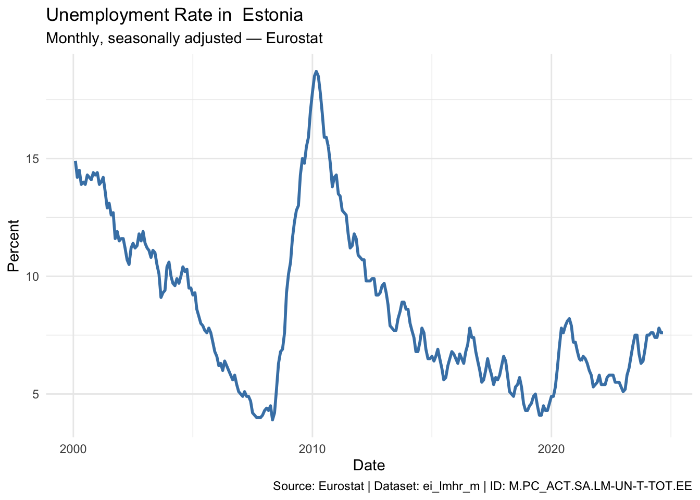
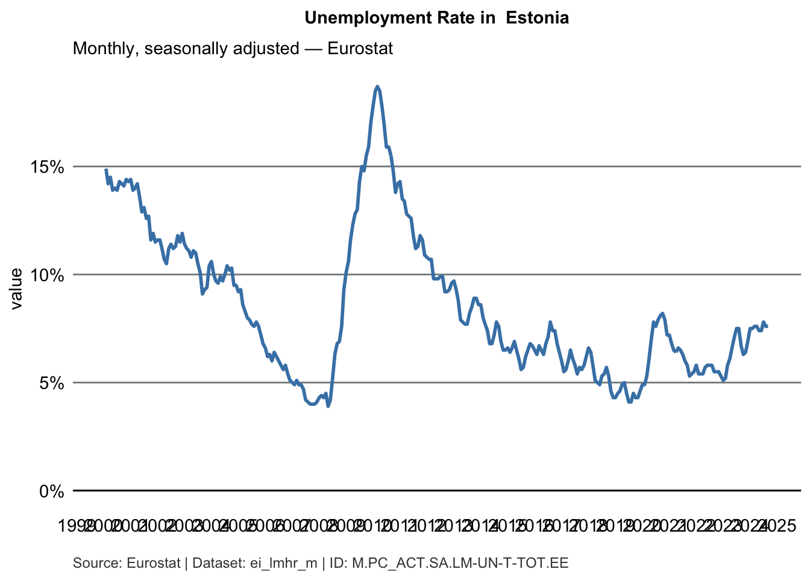
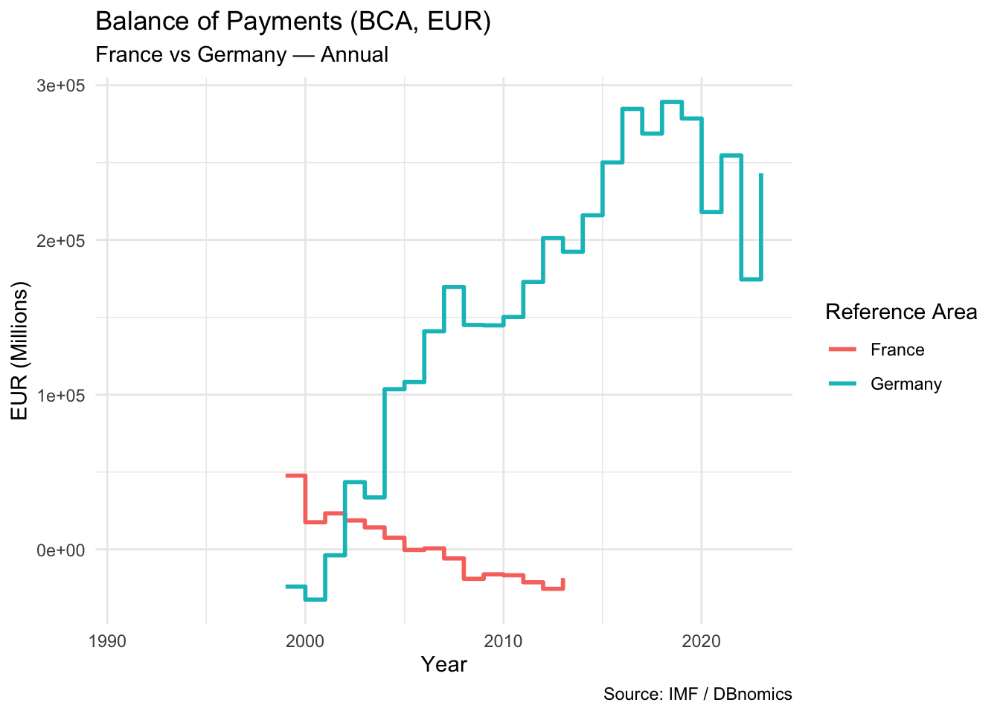
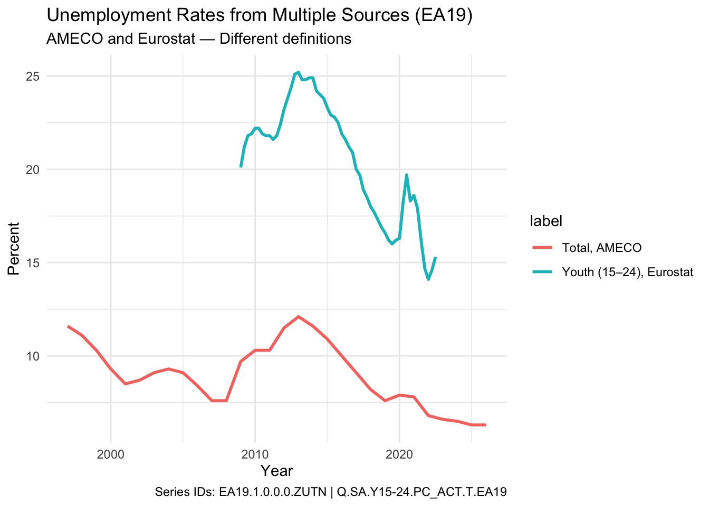
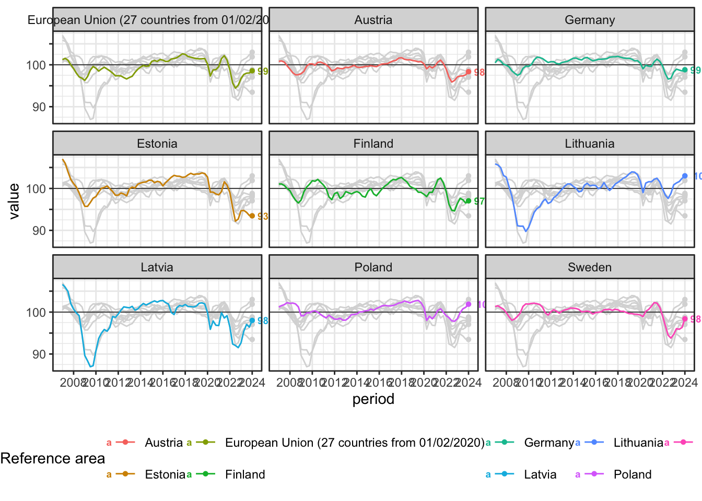
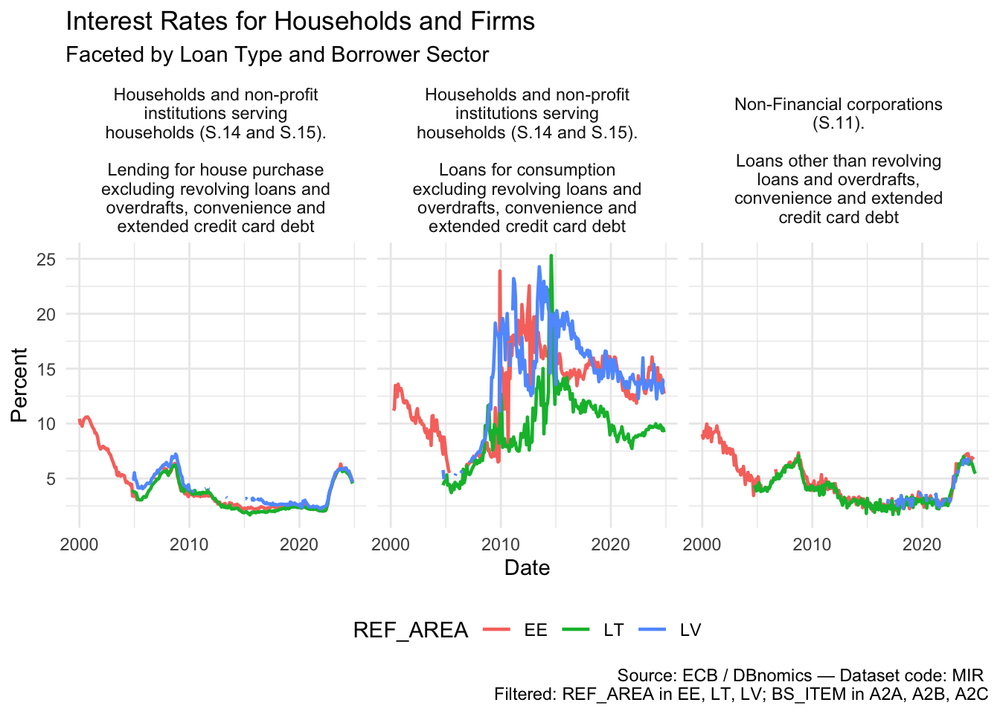
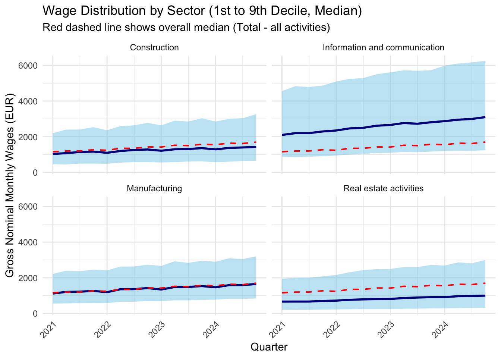

install.packages("rdbnomics")
library(rdbnomics)Fetching and Visualizing Official Statistics with R
Interfaces to Official Statistics
- Packages or set of classes and methods to read data and metadata documents through exchange frameworks
- Interface standards:
DBnomics
- DBnomics is a database of databases
- free platform to aggregate publicly-available economic data provided by national and international statistical institutions, but also by researchers and private companies
- Unified interface to access data from many sources
- Harmonized data formats and metadata
- Data series are available upon release by the provider
- Each revision is archived to build a real-time database
How to fetch data (from DBnomics using R)
- DBnomics R client
Packages used in this tutorial
- 📦 Fetching data (
rdbnomics) - 🧹 Data wrangling and transformation (
tidyverse) - 📊 Visualization (
ggplot2,plotly) - 📋 Tabular summaries (
gt) - 🧾 Building this presentation (
quarto)
library(quarto) # for compiling Quarto presentations
library(rdbnomics) # for accessing economic data via DBnomics
library(pxweb)
library(tidyverse) # dplyr, ggplot2, readr, etc.
library(plotly) # interactive visualizations
library(gt) # pretty tables
library(countrycode)Example: Fetch Unemployment Data
- Assume we know exactly the series ID we want to fetch
- Unemployment rate, ILO definition, total, Estonia, from Eurostat
unemp <- rdb(ids = "Eurostat/ei_lmhr_m/M.PC_ACT.SA.LM-UN-T-TOT.EE") # fetch dataglimpse(unemp)Rows: 296
Columns: 22
$ `@frequency` <chr> "monthly", "monthly", "monthly", "mo…
$ dataset_code <chr> "ei_lmhr_m", "ei_lmhr_m", "ei_lmhr_m…
$ dataset_name <chr> "Unemployment rate (%) - monthly dat…
$ freq <chr> "M", "M", "M", "M", "M", "M", "M", "…
$ geo <chr> "EE", "EE", "EE", "EE", "EE", "EE", …
$ `Geopolitical entity (reporting)` <chr> "Estonia", "Estonia", "Estonia", "Es…
$ indexed_at <dttm> 2024-10-31 15:26:51, 2024-10-31 15:…
$ indic <chr> "LM-UN-T-TOT", "LM-UN-T-TOT", "LM-UN…
$ Indicator <chr> "Unemployment according to ILO defin…
$ observations_attributes <chr> "OBS_FLAG,", "OBS_FLAG,", "OBS_FLAG,…
$ original_period <chr> "2000-02", "2000-03", "2000-04", "20…
$ original_value <chr> "14.9", "14.2", "14.5", "13.9", "14"…
$ period <date> 2000-02-01, 2000-03-01, 2000-04-01,…
$ provider_code <chr> "Eurostat", "Eurostat", "Eurostat", …
$ s_adj <chr> "SA", "SA", "SA", "SA", "SA", "SA", …
$ `Seasonal adjustment` <chr> "Seasonally adjusted data, not calen…
$ series_code <chr> "M.PC_ACT.SA.LM-UN-T-TOT.EE", "M.PC_…
$ series_name <chr> "Monthly – Percentage of population …
$ `Time frequency` <chr> "Monthly", "Monthly", "Monthly", "Mo…
$ unit <chr> "PC_ACT", "PC_ACT", "PC_ACT", "PC_AC…
$ `Unit of measure` <chr> "Percentage of population in the lab…
$ value <dbl> 14.9, 14.2, 14.5, 13.9, 14.0, 13.9, …colnames(unemp) [1] "@frequency" "dataset_code"
[3] "dataset_name" "freq"
[5] "geo" "Geopolitical entity (reporting)"
[7] "indexed_at" "indic"
[9] "Indicator" "observations_attributes"
[11] "original_period" "original_value"
[13] "period" "provider_code"
[15] "s_adj" "Seasonal adjustment"
[17] "series_code" "series_name"
[19] "Time frequency" "unit"
[21] "Unit of measure" "value" # Extract source and series ID from the metadata
(source_name <- unique(unemp$dataset_code)) [1] "ei_lmhr_m"(provider_code <- unique(unemp$provider_code)) [1] "Eurostat"(country_name <- unique(unemp$`Geopolitical entity (reporting)`) )[1] "Estonia"(series_id <- unique(unemp$series_code)) [1] "M.PC_ACT.SA.LM-UN-T-TOT.EE"# Plot the data
p1 <- ggplot(unemp, aes(x = period, y = value)) +
geom_line(color = "steelblue", linewidth = 1) +
labs(
title = paste("Unemployment Rate in ", country_name),
subtitle = paste("Monthly, seasonally adjusted —", provider_code),
x = "Date", y = "Percent",
caption = paste("Source:", provider_code, "| Dataset:", source_name, "| ID:", series_id)
) +
theme_minimal()
p1
Interactive plot
ggplotly(p1)source(here::here("scripts", "theme_ep.R"))
ggplot(unemp, aes(x = period, y = value)) +
geom_line(color = "steelblue", linewidth = 1) +
geom_hline(yintercept = 0, color = "#000", linewidth = 0.5) +
scale_x_date(date_breaks = "1 year", date_labels = "%Y") +
scale_y_continuous(labels = scales::label_number(suffix = "%")) +
labs(
title = paste("Unemployment Rate in ", country_name),
subtitle = paste("Monthly, seasonally adjusted —", provider_code),
x = "",
x = "",
caption = paste(
"Source:",
provider_code,
"| Dataset:",
source_name,
"| ID:",
series_id
)
) +
theme_ep()
How do we find the series ID/mask/dimensions?
- Go to the DBnomics website
- Show the available datasets of a provider:
head(rdb_datasets(provider_code = "Eurostat"))$Eurostat
code
<char>
1: aact_ali01
2: aact_ali02
3: aact_eaa01
4: aact_eaa02
5: aact_eaa03
---
8289: yth_empl_120
8290: yth_empl_130
8291: yth_empl_130
8292: yth_empl_140
8293: yth_empl_140
name
<char>
1: Agricultural labour input statistics: absolute figures (1 000 annual work units)
2: Agricultural labour input statistics: indices
3: Economic accounts for agriculture - values at current prices
4: Economic accounts for agriculture - values at n-1 prices
5: Economic accounts for agriculture - values at constant prices (2015 = 100)
---
8289: Youth long-term unemployment rate (12 months or longer) by sex and age
8290: Youth long-term unemployment rate (12 months or longer) by sex, age and NUTS 2 regions
8291: Youth long-term unemployment rate (12 months or longer) by sex, age and NUTS 2 region
8292: Youth unemployment ratio by sex, age and NUTS 2 regions
8293: Youth unemployment ratio by sex, age and NUTS 2 region- Show the dimensions of a dataset:
head(rdb_dimensions(provider_code = "Eurostat", dataset_code = "ei_lmhr_m"))$Eurostat
$Eurostat$ei_lmhr_m
$Eurostat$ei_lmhr_m$freq
freq Time frequency
<char> <char>
1: M Monthly
$Eurostat$ei_lmhr_m$geo
geo Geopolitical entity (reporting)
<char> <char>
1: AT Austria
2: BA Bosnia and Herzegovina
3: BE Belgium
4: BG Bulgaria
5: CH Switzerland
6: CY Cyprus
7: CZ Czechia
8: DE Germany
9: DK Denmark
10: EA20 Euro area – 20 countries (from 2023)
11: EE Estonia
12: EL Greece
13: ES Spain
14: EU27_2020 European Union - 27 countries (from 2020)
15: FI Finland
16: FR France
17: HR Croatia
18: HU Hungary
19: IE Ireland
20: IS Iceland
21: IT Italy
22: JP Japan
23: LT Lithuania
24: LU Luxembourg
25: LV Latvia
26: MT Malta
27: NL Netherlands
28: NO Norway
29: PL Poland
30: PT Portugal
31: RO Romania
32: SE Sweden
33: SI Slovenia
34: SK Slovakia
35: TR Türkiye
36: UK United Kingdom
37: US United States
geo Geopolitical entity (reporting)
$Eurostat$ei_lmhr_m$indic
indic
<char>
1: LM-UN-F-GT25
2: LM-UN-F-LE25
3: LM-UN-F-TOT
4: LM-UN-M-GT25
5: LM-UN-M-LE25
6: LM-UN-M-TOT
7: LM-UN-T-GT25
8: LM-UN-T-LE25
9: LM-UN-T-TOT
Indicator
<char>
1: Unemployment according to ILO definition - over 25 years - females
2: Unemployment according to ILO definition - under 25 years - females
3: Unemployment according to ILO definition - females
4: Unemployment according to ILO definition - over 25 years - males
5: Unemployment according to ILO definition - under 25 years - males
6: Unemployment according to ILO definition - males
7: Unemployment according to ILO definition - over 25 years - total
8: Unemployment according to ILO definition - under 25 years - total
9: Unemployment according to ILO definition - total
$Eurostat$ei_lmhr_m$s_adj
s_adj
<char>
1: NSA
2: SA
Seasonal adjustment
<char>
1: Unadjusted data (i.e. neither seasonally adjusted nor calendar adjusted data)
2: Seasonally adjusted data, not calendar adjusted data
$Eurostat$ei_lmhr_m$unit
unit Unit of measure
<char> <char>
1: PC_ACT Percentage of population in the labour force- Query to filter/select series from a provider’s dataset
head(rdb_series(
provider = "Eurostat",
dataset_code = "ei_lmhr_m",
query = "United Kingdom"
))$Eurostat
$Eurostat$ei_lmhr_m
series_code
<char>
1: M.PC_ACT.NSA.LM-UN-F-GT25.UK
2: M.PC_ACT.NSA.LM-UN-F-LE25.UK
3: M.PC_ACT.NSA.LM-UN-F-TOT.UK
4: M.PC_ACT.NSA.LM-UN-M-GT25.UK
5: M.PC_ACT.NSA.LM-UN-M-LE25.UK
6: M.PC_ACT.NSA.LM-UN-M-TOT.UK
7: M.PC_ACT.NSA.LM-UN-T-GT25.UK
8: M.PC_ACT.NSA.LM-UN-T-LE25.UK
9: M.PC_ACT.NSA.LM-UN-T-TOT.UK
10: M.PC_ACT.SA.LM-UN-F-GT25.UK
11: M.PC_ACT.SA.LM-UN-F-LE25.UK
12: M.PC_ACT.SA.LM-UN-F-TOT.UK
13: M.PC_ACT.SA.LM-UN-M-GT25.UK
14: M.PC_ACT.SA.LM-UN-M-LE25.UK
15: M.PC_ACT.SA.LM-UN-M-TOT.UK
16: M.PC_ACT.SA.LM-UN-T-GT25.UK
17: M.PC_ACT.SA.LM-UN-T-LE25.UK
18: M.PC_ACT.SA.LM-UN-T-TOT.UK
series_name
<char>
1: Monthly – Percentage of population in the labour force – Unadjusted data (i.e. neither seasonally adjusted nor calendar adjusted data) – Unemployment according to ILO definition - over 25 years - females – United Kingdom
2: Monthly – Percentage of population in the labour force – Unadjusted data (i.e. neither seasonally adjusted nor calendar adjusted data) – Unemployment according to ILO definition - under 25 years - females – United Kingdom
3: Monthly – Percentage of population in the labour force – Unadjusted data (i.e. neither seasonally adjusted nor calendar adjusted data) – Unemployment according to ILO definition - females – United Kingdom
4: Monthly – Percentage of population in the labour force – Unadjusted data (i.e. neither seasonally adjusted nor calendar adjusted data) – Unemployment according to ILO definition - over 25 years - males – United Kingdom
5: Monthly – Percentage of population in the labour force – Unadjusted data (i.e. neither seasonally adjusted nor calendar adjusted data) – Unemployment according to ILO definition - under 25 years - males – United Kingdom
6: Monthly – Percentage of population in the labour force – Unadjusted data (i.e. neither seasonally adjusted nor calendar adjusted data) – Unemployment according to ILO definition - males – United Kingdom
7: Monthly – Percentage of population in the labour force – Unadjusted data (i.e. neither seasonally adjusted nor calendar adjusted data) – Unemployment according to ILO definition - over 25 years - total – United Kingdom
8: Monthly – Percentage of population in the labour force – Unadjusted data (i.e. neither seasonally adjusted nor calendar adjusted data) – Unemployment according to ILO definition - under 25 years - total – United Kingdom
9: Monthly – Percentage of population in the labour force – Unadjusted data (i.e. neither seasonally adjusted nor calendar adjusted data) – Unemployment according to ILO definition - total – United Kingdom
10: Monthly – Percentage of population in the labour force – Seasonally adjusted data, not calendar adjusted data – Unemployment according to ILO definition - over 25 years - females – United Kingdom
11: Monthly – Percentage of population in the labour force – Seasonally adjusted data, not calendar adjusted data – Unemployment according to ILO definition - under 25 years - females – United Kingdom
12: Monthly – Percentage of population in the labour force – Seasonally adjusted data, not calendar adjusted data – Unemployment according to ILO definition - females – United Kingdom
13: Monthly – Percentage of population in the labour force – Seasonally adjusted data, not calendar adjusted data – Unemployment according to ILO definition - over 25 years - males – United Kingdom
14: Monthly – Percentage of population in the labour force – Seasonally adjusted data, not calendar adjusted data – Unemployment according to ILO definition - under 25 years - males – United Kingdom
15: Monthly – Percentage of population in the labour force – Seasonally adjusted data, not calendar adjusted data – Unemployment according to ILO definition - males – United Kingdom
16: Monthly – Percentage of population in the labour force – Seasonally adjusted data, not calendar adjusted data – Unemployment according to ILO definition - over 25 years - total – United Kingdom
17: Monthly – Percentage of population in the labour force – Seasonally adjusted data, not calendar adjusted data – Unemployment according to ILO definition - under 25 years - total – United Kingdom
18: Monthly – Percentage of population in the labour force – Seasonally adjusted data, not calendar adjusted data – Unemployment according to ILO definition - total – United KingdomFetch two (or more) series at once
- Example: Balance of Payments (BOP) for France and Germany from the IMF for Current Account, Total, Net, Euros, Millions, Annual
# by ID
bop <- rdb(ids = c("IMF/BOP/A.FR.BCA_BP6_EUR", "IMF/BOP/A.DE.BCA_BP6_EUR"))
bop %>% count(`Reference Area`) Reference Area n
<char> <int>
1: France 15
2: Germany 26# by Mask
bop <- rdb(provider = "IMF",
dataset_code = "BOP",
mask = "A.FR+DE.BCA_BP6_EUR")
bop %>% count(`Reference Area`) Reference Area n
<char> <int>
1: France 15
2: Germany 26⚠You can not specify a dimension without a value!
# by Dimension
dim <- list(
REF_AREA = c("DE", "FR"),
INDICATOR = c("BCA_BP6_EUR"),
FREQ = "A"
)
## Here I do not include FREQUENCY in the dimension list. I would download annual and quarterly data
# dim <- list(
# REF_AREA = c("DE", "FR"),
# INDICATOR = c("BCA_BP6_EUR")
# )
bop <- rdb(provider = "IMF", dataset_code = "BOP", dimensions = dim)
bop %>% count(`Reference Area`) Reference Area n
<char> <int>
1: France 15
2: Germany 26# Line plot with color by country
p2 <- ggplot(bop, aes(x = period, y = value, color = `Reference Area`)) +
geom_step(linewidth = 1) +
labs(
title = "Balance of Payments (BCA, EUR)",
subtitle = "France vs Germany — Annual",
x = "Year",
y = "EUR (Millions)",
caption = "Source: IMF / DBnomics"
) +
theme_minimal()
p2
Fetch two series from different datasets of different providers
unemp2 <- rdb(ids = c("AMECO/ZUTN/EA19.1.0.0.0.ZUTN", "Eurostat/une_rt_q/Q.SA.Y15-24.PC_ACT.T.EA19"))# See which providers and datasets are included
dim(unemp2)[1] 122 27unique(unemp2$provider_code)[1] "AMECO" "Eurostat"unique(unemp2$dataset_code)[1] "ZUTN" "une_rt_q"unique(unemp2$series_code)[1] "EA19.1.0.0.0.ZUTN" "Q.SA.Y15-24.PC_ACT.T.EA19"unique(unemp2$`@frequency`)[1] "annual" "quarterly"unique(unemp2$`Seasonal adjustment`)[1] NA
[2] "Seasonally adjusted data, not calendar adjusted data"# Summarize coverage and data availability
unemp2_summary <- unemp2 %>%
group_by(series_code) %>%
summarize(
provider = first(provider_code),
dataset = first(dataset_code),
start_all = min(period, na.rm = TRUE),
end_all = max(period, na.rm = TRUE),
start_data = min(period[!is.na(value)]),
end_data = max(period[!is.na(value)]),
n_obs = sum(!is.na(value)),
.groups = "drop"
)unemp2_summary_table <- unemp2_summary |>
gt() %>%
tab_header(
title = "Time Coverage and Non-Missing Observations",
subtitle = "For Each Series from AMECO and Eurostat"
) %>%
cols_label(
series_code = "Series ID",
provider = "Provider",
dataset = "Dataset",
start_all = "Start (all)",
end_all = "End (all)",
start_data = "Start (non-NA)",
end_data = "End (non-NA)",
n_obs = "# Obs"
) %>%
fmt_date(
columns = c(start_all, end_all, start_data, end_data),
date_style = "iso"
) %>%
tab_options(
table.width = pct(100),
column_labels.font.weight = "bold"
)unemp2_summary_table| Time Coverage and Non-Missing Observations | |||||||
|---|---|---|---|---|---|---|---|
| For Each Series from AMECO and Eurostat | |||||||
| Series ID | Provider | Dataset | Start (all) | End (all) | Start (non-NA) | End (non-NA) | # Obs |
| EA19.1.0.0.0.ZUTN | AMECO | ZUTN | 1960-01-01 | 2026-01-01 | 1997-01-01 | 2026-01-01 | 30 |
| Q.SA.Y15-24.PC_ACT.T.EA19 | Eurostat | une_rt_q | 2009-01-01 | 2022-07-01 | 2009-01-01 | 2022-07-01 | 55 |
# Metadata vectors
providers <- unique(unemp2$provider_code)
datasets <- unique(unemp2$dataset_code)
series_ids <- unique(unemp2$series_code)# Create a label that combines dataset + series ID
unemp2_clean <- unemp2 %>%
drop_na(value) %>%
mutate(label = case_when(
series_code == "EA19.1.0.0.0.ZUTN" ~ "Total, AMECO",
series_code == "Q.SA.Y15-24.PC_ACT.T.EA19" ~ "Youth (15–24), Eurostat",
TRUE ~ series_code
))p3 <- ggplot(unemp2_clean, aes(x = period, y = value, color = label)) +
geom_line(linewidth = 1) +
labs(
title = "Unemployment Rates from Multiple Sources (EA19)",
subtitle = "AMECO and Eurostat — Different definitions",
x = "Year", y = "Percent",
caption = paste("Series IDs:", paste(unique(unemp2_clean$series_code), collapse = " | "))
) +
theme_minimal()
p3
Fetch large amounts of data
cci_ee <- rdb("OECD", "DSD_HHDASH@DF_HHDASH_CTRY", "Q.EST.CCICP.IX")
unique(cci_ee$series_name)[1] "Quarterly – Estonia – Consumer confidence – Index"unique(cci_ee$REF_AREA)[1] "EST"Wildcarding dimensions
- To fetch multiple values for a dimension (e.g. countries), just remove the value from that position
- Example: remove
"EE"to fetch all countries (REF_AREA)
- Example: remove
⚠️ This can take a while
# cci_ee <- rdb("OECD", "DSD_HHDASH@DF_HHDASH_CTRY", "Q.EST.CCICP.IX")
cci <- rdb("OECD", "DSD_HHDASH@DF_HHDASH_CTRY", "Q..CCICP.IX")
# cci <- rdb("OECD", "DSD_HHDASH@DF_HHDASH_CTRY", "..CCICP.IX") # also wildcard the frequency
unique(cci$REF_AREA) [1] "AUS" "AUT" "BEL" "CHE" "CHL" "COL"
[7] "CRI" "CZE" "DEU" "DNK" "EA" "ESP"
[13] "EST" "EU27_2020" "FIN" "FRA" "G7" "GBR"
[19] "GRC" "HUN" "IRL" "ISR" "ITA" "JPN"
[25] "KOR" "LTU" "LUX" "LVA" "MEX" "NLD"
[31] "NZL" "OECD" "POL" "PRT" "SVK" "SVN"
[37] "SWE" "TUR" "USA" cci_eu <- cci %>%
filter(
REF_AREA %in% c("EU27_2020", "AUT", "EST", "FIN", "DEU", "LVA", "LTU", "POL", "SWE")) |>
mutate(
REF_AREA = case_when(
REF_AREA == "EU27_2020" ~ "EU27",
TRUE ~ countrycode(REF_AREA, origin = "iso3c", destination = "iso2c")
)
)
unique(cci_eu$`Reference area`)[1] "Austria"
[2] "Germany"
[3] "Estonia"
[4] "European Union (27 countries from 01/02/2020)"
[5] "Finland"
[6] "Lithuania"
[7] "Latvia"
[8] "Poland"
[9] "Sweden" library(gghighlight)
desired_order <- c(
"European Union (27 countries from 01/02/2020)",
"Austria",
"Germany",
"Estonia",
"Finland",
"Lithuania",
"Latvia",
"Poland",
"Sweden"
)
unique(cci_eu$`Reference area`)[1] "Austria"
[2] "Germany"
[3] "Estonia"
[4] "European Union (27 countries from 01/02/2020)"
[5] "Finland"
[6] "Lithuania"
[7] "Latvia"
[8] "Poland"
[9] "Sweden" cci_eu |>
ggplot() +
geom_hline(yintercept = 100, linetype = "solid", size = .25) +
geom_point(
data = cci_eu %>%
group_by(`Reference area`) %>%
slice_max(period),
aes(x = period, y = value, color = `Reference area`),
shape = 16
) +
geom_line(aes(x = period, y = value, color = `Reference area`)) +
gghighlight(
use_direct_label = FALSE,
unhighlighted_params = list(colour = alpha("grey85", 1))
) +
geom_text(
data = cci_eu %>%
group_by(`Reference area`) %>%
slice_max(period),
aes(x = period, y = value, color = `Reference area`, label = round(value)),
hjust = -.5,
vjust = .5,
size = 2.5,
fontface = "bold"
) +
scale_x_date(
date_labels = "%Y",
date_breaks = "2 years"
)+
scale_y_continuous(
breaks = c(90, 95, 100, 105, 110),
labels = c("90", "", "100", "", "110")
) +
facet_wrap(
~ factor(`Reference area`, levels = desired_order)
) +
coord_cartesian(clip = "off") +
theme_bw() +
theme(
legend.position = "bottom"
)
- Sometimes you need to fetch many if not all dimensions of the data
- You can wildcard dimension and post-filter
- Example: MFI Interest Rate Statistics from the ECB
- Start with a single series (Estonia, mortgage rates)
mir_mortgage_ee <- rdb("ECB", "MIR", "M.EE.B.A2C.A.R.A.2250.EUR.N")
unique(mir_mortgage_ee$series_name)[1] "Monthly – Estonia – Deposit-taking corporations except the central bank (S.122) – Lending for house purchase excluding revolving loans and overdrafts, convenience and extended credit card debt – Total – Annualised agreed rate (AAR) / Narrowly defined effective rate (NDER) – Total – Households and non-profit institutions serving households (S.14 and S.15) – Euro – New business"Wildcarding dimensions
- To fetch multiple values for a dimension (e.g. countries), just remove the value from that position
- Example: remove
"EE"to fetch all countries (REF_AREA)
- Example: remove
⚠️ This can take a while
# mir_mortgage_ee <- rdb("ECB", "MIR", "M.EE.B.A2C.A.R.A.2250.EUR.N")
mir <- rdb("ECB", "MIR", "M..B..A.R.A..EUR.N")
unique(mir$REF_AREA) [1] "AT" "BE" "CY" "DE" "EE" "ES" "FI" "FR" "GR" "HR" "IE" "IT" "LT" "LU" "LV"
[16] "MT" "NL" "PT" "SI" "SK" "U2"unique(mir$BS_ITEM) [1] "A2A" "A2AC" "A2B" "A2BC" "A2C" "A2CC" "A2D" "A2Z" "A2Z1" "A2Z3"
[11] "L21" "L22" "L23" "L24" unique(mir$`BS counterpart sector`)[1] "Non-Financial corporations (S.11)"
[2] "Households and non-profit institutions serving households (S.14 and S.15)"
[3] "Households of which sole proprietors and unincorporated partnerships (SP/UP)"
[4] "Non-Financial corporations and Households (S.11 and S.14 and S.15)" Filter and plot
- Filter Estonia, Latvia and Lithuania
- Keep only selected BS items (loan categories)
# Filter by BS_ITEM and countries
mir_filtered <- mir %>%
filter(
REF_AREA %in% c("EE", "LV", "LT"),
BS_ITEM %in% c("A2I", "A2C", "A2B", "A2J", "A2A")
)Plot interest rates by country & type
country_list <- paste(sort(unique(mir_filtered$REF_AREA)), collapse = ", ")
item_list <- paste(unique(mir_filtered$BS_ITEM), collapse = ", ")
caption_text <- paste(
"Source: ECB / DBnomics — Dataset code: MIR",
paste0("\nFiltered: REF_AREA in ", country_list, "; BS_ITEM in ", item_list)
)
mir_filtered <- mir_filtered %>%
mutate(facet_label = paste0(`BS counterpart sector`, ".\n\n", `Balance sheet item`))
p4 <- ggplot(mir_filtered, aes(x = period, y = value, color = REF_AREA)) +
geom_line(linewidth = 0.8) +
facet_wrap(~ facet_label, labeller = label_wrap_gen(width = 30), ncol = 3) +
labs(
title = "Interest Rates for Households and Firms",
subtitle = "Faceted by Loan Type and Borrower Sector",
x = "Date", y = "Percent",
caption = caption_text
) +
theme_minimal() +
theme(legend.position = "bottom")
p4
Accessing Statistics Estonia Data with pxweb
- Statistics Estonia is not yet part of DBnomics
- No dedicated R package for andmed.stat.ee
- But: you can access data using the
pxwebR package - Based on the PX-WEB API, which is also used by many Nordic stats agencies
🔍 How to Identify Variables
How to Identify Query Variables
- 🧠 Use either:
- Programmatically via the metadata (
pxweb_get(),pxweb_get_metadata()) - From the Statistics Estonia web interface – click “API query for this table”
- Programmatically via the metadata (
pa111_meta <- pxweb_get(
url = "https://andmed.stat.ee/api/v1/en/stat/PA111")
pa111_metaPXWEB METADATA
PA111: AVERAGE MONTHLY GROSS WAGES (SALARIES), MEDIAN, DECILES AND NUMBER OF EMPLOYEES BY ECONOMIC ACTIVITY SECTION (QUARTERLY)
variables:
[[1]] Näitaja: Indicator
[[2]] Tegevusala: Economic activity
[[3]] Vaatlusperiood: Reference periodpa111_meta$variables[[1]]$code
[1] "Näitaja"
$text
[1] "Indicator"
$values
[1] "GR_W_AVG" "NR_EMPL" "GR_W_D1" "GR_W_D2" "GR_W_D3"
[6] "GR_W_D4" "GR_W_D5" "GR_W_D6" "GR_W_D7" "GR_W_D8"
[11] "GR_W_D9" "GR_W_AVG_SM"
$valueTexts
[1] "Average monthly gross wages (salaries), euros"
[2] "Number of employees"
[3] "1st decile of monthly gross wages (salaries), euros"
[4] "2nd decile of monthly gross wages (salaries), euros"
[5] "3rd decile of monthly gross wages (salaries), euros"
[6] "4th decile of monthly gross wages (salaries), euros"
[7] "Median (5th decile) of monthly gross wages (salaries), euros"
[8] "6th decile of monthly gross wages (salaries), euros"
[9] "7th decile of monthly gross wages (salaries), euros"
[10] "8th decile of monthly gross wages (salaries), euros"
[11] "9th decile of monthly gross wages (salaries), euros"
[12] "Percentage change in average gross wages (salaries) compared to same period in previous year, %"
$elimination
[1] FALSE
$time
[1] FALSEpx_query_list1 <- list(
"Näitaja" = c("GR_W_D1", "GR_W_D5", "GR_W_D9"),
"Tegevusala" = "*",
"Vaatlusperiood" = "*"
)
pa111 <- pxweb_get(
url = "https://andmed.stat.ee/api/v1/en/stat/PA111",
query = px_query_list1
)
# Convert to data frame
pa111.df <- as.data.frame(pa111, column.name.type = "text", variable.value.type = "text")
pa111.code <- as.data.frame(pa111, column.name.type = "code", variable.value.type = "code")
pa111.df$Näitaja <- pa111.code$Näitajaselected_sectors <- c("Manufacturing", "Construction", "Information and communication", "Real estate activities", "Total - all activities")
# Clean and reshape
pa111_plotdata <- pa111.df %>%
mutate(
quarter = yq(str_replace(`Reference period`, " ", "-")),
Indicator = recode(
Näitaja,
"GR_W_D1" = "D1",
"GR_W_D5" = "Median",
"GR_W_D9" = "D9"
)
) %>%
filter(
`Economic activity` %in% selected_sectors,
Indicator %in% c("D1", "Median", "D9")
) %>%
select(quarter, `Economic activity`, Indicator, value = `PA111: AVERAGE MONTHLY GROSS WAGES (SALARIES), MEDIAN, DECILES AND NUMBER OF EMPLOYEES`) %>%
pivot_wider(names_from = Indicator, values_from = value)overall_median <- pa111_plotdata %>%
filter(`Economic activity` == "Total - all activities") %>%
select(quarter, total_median = Median)pa111_plotdata <- pa111_plotdata %>%
filter(`Economic activity` != "Total - all activities") %>%
left_join(overall_median, by = "quarter")ggplot(pa111_plotdata, aes(x = quarter)) +
geom_ribbon(aes(ymin = D1, ymax = D9), fill = "skyblue", alpha = 0.5) +
geom_line(aes(y = Median), color = "darkblue", linewidth = 1) +
geom_line(aes(y = total_median), color = "red", linetype = "dashed", linewidth = 0.7) +
facet_wrap(~`Economic activity`, ncol = 2) +
labs(
title = "Wage Distribution by Sector (1st to 9th Decile, Median)",
subtitle = "Red dashed line shows overall median (Total - all activities)",
x = "Quarter",
y = "Gross Nominal Monthly Wages (EUR)"
) +
theme_minimal() +
theme(axis.text.x = element_text(angle = 45, hjust = 1))
# library(DataExplorer)
# create_report(pa111_plotdata)